Multi-Objective Optimal Operation (M3O) Toolbox
M3O is a Matlab toolbox for designing the optimal operations of multipurpose water reservoir systems. M3O allows users to design Pareto optimal (or approximate) operating policies for managing water reservoir systems through several alternative state-of-the-art methods. Version 1.0 of M3O includes Deterministic and Stochastic Dynamic Programming, Implicit Stochastic Optimization, Sampling Stochastic Dynamic Programming, fitted Q-iteration, Evolutionary Multi-Objective Direct Policy Search, and Model Predictive Control. The toolbox is designed to be accessible to practitioners, researchers, and students, and to provide a fully commented and customizable code for more experienced users.
Contents
- Configure general system parameters
- Run DDP - Deterministic Dynamic Programming
- Run SDP - Stochastic Dynamic Programming
- Run EMODPS - Evolutionary Multi-Objective Direct Policy Search)
- Run FQI - Fitted Q-Iteration
- Run MPC - Model Predictive Control
- Run ISO - Implicit Stochastic Optimization
- Run SSDP - Sampling Stochastic Dynamic Programming
clear all; clc addpath(genpath('sim')) addpath(genpath('lib'))
Configure general system parameters
This section is specific to the case study at hand. The structure sys_param is shared by the inner function of the toolbox via the global command.
global sys_param;
As an example, we provide the modeling of Lake Como, that is a regulated lake in Northern Italy (Figure 1, left panel) fed by a 3,500 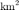 catchment, where the lake inflow and effluent is the Adda River, which supports several agricultural districts with a total surface of 1,400 . Major crops are cereals, especially maize, along with temporary grasslands for livestocks. Beside water supply, the regulation of the lake, which has an active storage capacity of 254 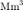 aims also to prevent flooding along the lake shores, particularly in Como city, which is the lowest point of the shoreline. In particular, the release decision provided by the operating policy is constrained within the regulation range shown in Figure 1 (right panel) by some physical and normative constraints that force the operator to completely close the dam if the level is below -0.5 m and, viceversa, to completely open the dam if the level is above 1.25 m. The corresponding parameters are:
sys_param.simulation.h0 = -0.5; % lowest water level [cm] sys_param.simulation.A = 145900000; % surface of the lake [cm2] sys_param.simulation.r_min = 0; % minimum possible release [m3/s] sys_param.simulation.r_max = 518; % maximum possible release [m3/s]
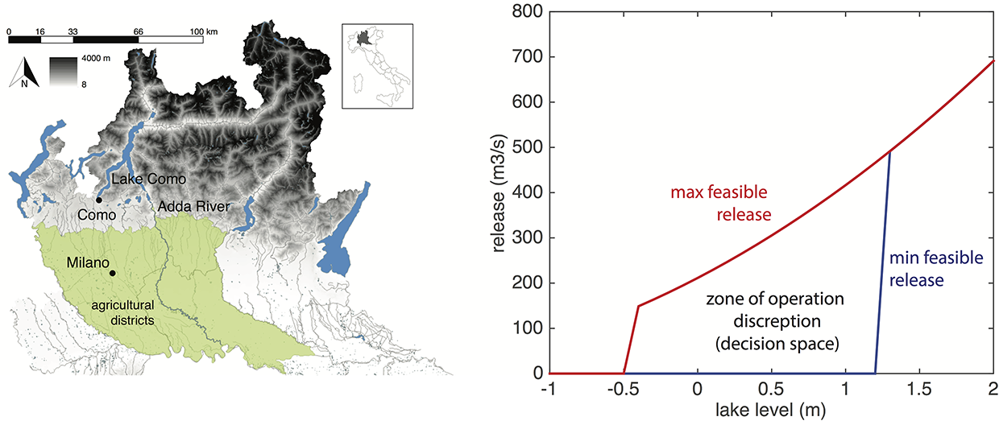
Figure 1: Map of the Lake Como system (left panel) and illustration of the associated zone of operation discreption delimited by the physical/normative constraints on the maximum and minimum release (right panel).
The competing interests of irrigation supply and flood control can be modeled using the following formulations:
- Flooding: the daily average level excess with respect to the flooding threshold, 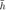 = 0.8 m, i.e.:

sys_param.simulation.hFLO = 0.8 ; % flooding threshold [m]
- Irrigation: the daily average water deficit is taken w.r.t. the downstream demand 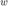 = 370 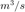, i.e:
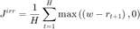
sys_param.simulation.w = 370 ; % water demand [m3/s]
Note that to simplify the solution of the problem, we assume the system as stationary (i.e., we remove the seasonality) and adapted the values of inflows, water demand, and flooding threshold to maintain the real conflicts between water supply and flood protection. The simulation step is one day long and the initial level of the lake is set to 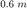.
sys_param.simulation.h_in = 0.6; % water level of the first day [m] sys_param.simulation.delta = 60*60*24; % timestep length [s] sys_param.simulation.q = load('inflow.txt','-ascii'); % synthesis inflow sample assuming same pdf for each calendar day [sys_param.simulation.vv, sys_param.simulation.VV] = deal(0);
Run DDP - Deterministic Dynamic Programming
Deterministic dynamic programming (DDP) formulate the operating policy design problem as a sequential decision-making process. It requires a discretization of the values of storage, decision and inflow:
clc addpath('./DP') load 'grids.mat'; sys_param.algorithm = grids; sys_param.algorithm.name = 'ddp'; sys_param.algorithm.Hend = 0 ; % penalty for last state set to 0
For each discretized couple of values of state and inflow, it is possible to compute the daily minimum/maximum release offline:
[vv, VV] = construct_rel_matrices(grids); sys_param.algorithm.min_rel = vv; sys_param.algorithm.max_rel = VV;
DDP is a single objective method so weights are needed to aggregate the objectives values. By changing weights it is possible to explore the Pareto Front.
lambda = [1 0; .75 .25; .5 .5 ; .35 .65; .2 .8; .1 .9; 0 1]; Nalt = size(lambda,1); JJ_ddp = nan(Nalt,2); Hddp = cell(Nalt,1);
For each weight combination we run the algorithm and store the resulting performance as well as the Bellman function for reuse.
for i = 1: Nalt sys_param.algorithm.weights = lambda(i,:); [JJ_ddp(i,:), Hddp{i}] = run_ddp() ; end figure; plot( JJ_ddp(:,1), JJ_ddp(:,2), 'o' ); xlabel('flooding'); ylabel('irrigation');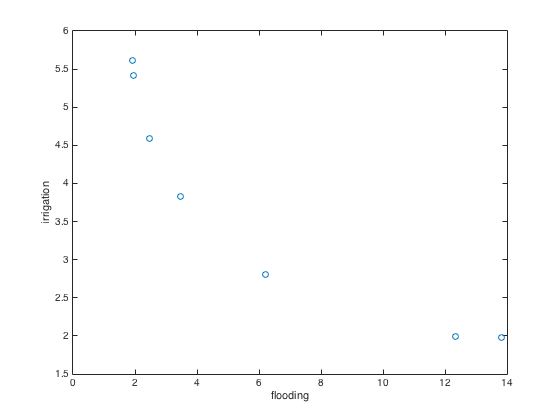
Run SDP - Stochastic Dynamic Programming
Stochastic dynamic programming (SDP) formulate the operating policy design problem as a sequential decision-making process under the stochastic disturbance. The discretization of the values of storage, decision and inflow is similar to the DDP. Notice that in this example we assume the full stationarity, therefore for each decision stage the Bellman value function is essentially the same.
clc addpath('./SDP') load 'grids.mat'; sys_param.algorithm = grids; sys_param.algorithm.name = 'sdp'; sys_param.algorithm.Hend = 0 ; % penalty set to 0 sys_param.algorithm.T = 1 ; % the period is equal 1 as we assume stationary conditions sys_param.algorithm.gamma = 1; % set future discount factor
As for DDP, it is possible to compute the daily minimum/maximum release offline:
[vv, VV] = construct_rel_matrices(grids); sys_param.algorithm.min_rel = vv; sys_param.algorithm.max_rel = VV;
A major difference w.r.t. DDP is that the disturbance stochasticity is modeled as a certain probability density function. In this case the inflow is assumed to be distributed as a log normal and the parameters are fitted on the data available.
sys_param.algorithm.q_stat = lognfit(sys_param.simulation.q);
SDP is also a single objective method so we explore the Pareto Front by changing weights.
lambda = [1 0; .75 .25; .5 .5 ; .35 .65; .2 .8; .1 .9; 0 1]; Nalt = size(lambda,1); JJ_sdp = nan(Nalt,2); Hsdp = cell(Nalt, 1); for i = 1: Nalt sys_param.algorithm.weights = lambda(i,:); [JJ_sdp(i,:), Hsdp{i}] = run_sdp(); end figure; plot( JJ_sdp(:,1), JJ_sdp(:,2), 'o' ); xlabel('flooding'); ylabel('irrigation');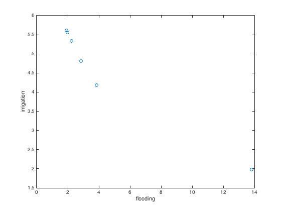
Run EMODPS - Evolutionary Multi-Objective Direct Policy Search)
Evolutionary multi-objective direct policy search (EMODPS) is a simulation-based approach that combines direct policy search, non-linear approximating networks, and multi-objective evolutionary algorithms. Specifically, the optimal control policy can be assumed of a particular function, e.g., piece-wise linear, parameterized by a set of parameters, where the value of parameters can be optimized via simulation based global optimization algorithm. Notice that EMODPS being a fully multi-objective algorithm does not require the aggregation of objectives into a single measure.
clc
addpath('./EMODPS')
Define the parameterized class for the policy (i.e., standard operating policy), in this case we assume the standard piece-wise linear function to parameterize the control policy, and we use NSGAII to optimize the parameters that best capture the multi-objective Pareto Front.
sys_param.algorithm.name = 'emodps' ; pClass = 'stdOP';
Define MOEA and its setting (i.e., NSGAII)
moea_param.name = 'NSGAII'; moea_param.pop = 40; % number of individuals; requires fine tuning moea_param.gen = 50; % number of generation; requires fine tuning [JJ_emodps, Popt] = run_emodps(pClass, moea_param) ; figure; plot( JJ_emodps(:,1), JJ_emodps(:,2), 'o' ); xlabel('flooding'); ylabel('irrigation');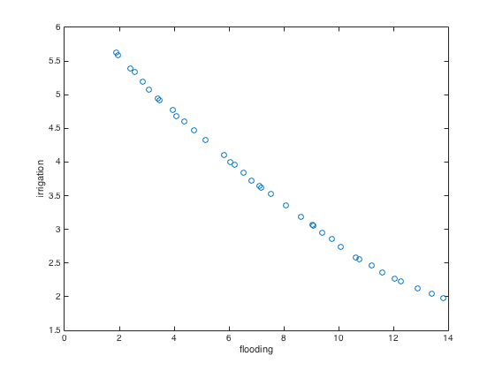
Run FQI - Fitted Q-Iteration
Fitted Q-Iteration (FQI) is a batch-mode reinforcement learning (RL) algorithm that combines RL concepts of off-line learning and functional approximation of the value function.
clc addpath('./FQI') load 'grids.mat'; sys_param.algorithm = grids;
FQI starts with collection of the results from a number of Monte Carlo simulations, from which FQI will subsequently learn the best value function.
sys_param.algorithm.name = 'doe'; [F, G] = run_doe(50) ; % create 50 samples of tuples
Similar, FQI is a single objective method so weights are needed to aggregate the objectives values. By changing weights it is possible to explore the Pareto Front.
lambda = [1 0; .75 .25; .5 .5 ; .35 .65; .2 .8; .1 .9; 0 1]; Nalt = size(lambda,1); JJ_fqi = nan(Nalt, 2); Qfqi = cell(Nalt, 1);
Regression techniques are used to approximate the actual value function. In this case, we use tree-based regressors (i.e. extra-trees).
reg_param.name = 'ET'; reg_param.M = 200; % number of trees reg_param.nmin = 25; % minimum number of points per leaf reg_param.maxIter = 40; sys_param.algorithm.name = 'fqi'; sys_param.algorithm.gamma = 0.99; for i = 1: Nalt sys_param.algorithm.weights = lambda(i,:); [JJ_fqi(i,:), Qfqi{i}] = run_fqi(F, G, reg_param); end figure; plot( JJ_fqi(:,1), JJ_fqi(:,2), 'o' ); xlabel('flooding'); ylabel('irrigation');
Undefined function or variable 'Nu'.
Error in readQ (line 40)
for i = 1: Nu
Error in run_fqi (line 97)
H = readQ(x1, discr_s, discr_u, Q_curr);
Error in main_script_demo (line 263)
[JJ_fqi(i,:), Qfqi{i}] = run_fqi(F, G, reg_param);
Run MPC - Model Predictive Control
Model Predictive Control is a real-time control approach based on the sequential resolution of multiple open-loop control problems defined over a finite, receding time horizon.
clc; addpath('./MPC') sys_param.algorithm.name = 'mpc';
At each time step, a forecast of the inflow, called nominal value, is provided over the finite future horizon [t, t + P].
sys_param.algorithm.P = 3; % Length of the moving prediction horizon
sys_param.algorithm.mi_e = mean(sys_param.simulation.q);
sys_param.algorithm.sigma_e = std(sys_param.simulation.q);
MPC works for a single objective method so we explore the Pareto Front by changing weights.
lambda = [1 0; .75 .25; .5 .5 ; .35 .65; .2 .8; .1 .9; 0 1]; Nalt = size(lambda,1); JJ_mpc = nan(Nalt, 2); Ompc = cell(Nalt, 1); errorLevel = 0; % Disturbance prediction error [%] for i = 1: Nalt sys_param.algorithm.weights = lambda(i,:); [JJ_mpc(i,:), Ompc{i}] = run_mpc(errorLevel); end figure; plot( JJ_mpc(:,1), JJ_mpc(:,2), 'o' ); xlabel('flooding'); ylabel('irrigation');
Run ISO - Implicit Stochastic Optimization
The Implicit Stochastic Optimization (ISO) design the operating policy by regressing the predictors (e.g., state variables) towards the predictands (decision variables). To collect the samples for building the regression models, ISO methods relies on a set of deterministic optimizations (e.g., DDP) before hand.
clc; addpath('./DP') load 'grids.mat'; sys_param.algorithm = grids; sys_param.algorithm.name = 'iso'; [vv, VV] = construct_rel_matrices(grids); % compute daily minimum/maximum release matrixes sys_param.algorithm.min_rel = vv; sys_param.algorithm.max_rel = VV; sys_param.algorithm.Hend = 0 ; % penalty set to 0
Define regression method to define a function mapping the selecte variables into release decisions.
regressor = 'linear_spline';
sys_param.algorithm.regressorName = regressor;
ISO also works for a single objective method so we explore the Pareto Front by changing weights.
lambda = [1 0; .75 .25; .5 .5 ; .35 .65; .2 .8; .1 .9; 0 1]; Nalt = size(lambda,1); [JJ_iso, err_perc] = deal(nan(Nalt,2)); policy = cell(Nalt,1); for i = 1: Nalt sys_param.algorithm.weights = lambda(i,:); [JJ_iso(i,:), policy{i}, err_perc(i,:)] = run_iso(regressor); end figure; plot( JJ_iso(:,1), JJ_iso(:,2), 'o' ); xlabel('flooding'); ylabel('irrigation');
Run SSDP - Sampling Stochastic Dynamic Programming
Sampling Stochastic Dynamic Programming (SSDP) replaces the explicit probability description of the system disturbances in SDP with the use of multiple scenarios as an empirical distribution. These scenarios can be either multiple historical time-series or ensemble forecast, with latter providing more accurate information about the future conditions.
clc; addpath('./SSDP') load 'grids.mat'; sys_param.algorithm = grids; sys_param.algorithm.name = 'ssdp'; sys_param.algorithm.Hend = 0 ; % penalty set to 0 [vv, VV] = construct_rel_matrices(grids); % compute daily minimum/maximum release matrixes sys_param.algorithm.min_rel = vv; sys_param.algorithm.max_rel = VV; sys_param.algorithm.T = 365; sys_param.algorithm.interp_foo = @interp1qr; % default linear interpolator sys_param.algorithm.gamma = 1; sys_param.algorithm.Pr_mode = 2; sys_param.algorithm.cycle_T = 300; sys_param.algorithm.forecast_T = 60;
As for SDP, in SSDP the disturbance is assumed to be distributed as a log normal and the parameters are fitted on the data available. The model is then used to create the test samples for a total of 25 ensembles with 365 days each.
q_stat = lognfit(sys_param.simulation.q) ; esp_sample = lognrnd( q_stat(1), q_stat(2), 365, 25 ); sys_param.algorithm.esp_sample = esp_sample ;
SSDP works for a single objective method so we explore the Pareto Front by changing weights.
lambda = [1 0; .75 .25; .5 .5 ; .35 .65; .2 .8; .1 .9; 0 1]; Nalt = size(lambda,1); JJ_ssdp = nan(Nalt, 2); H_policy = cell(Nalt, 1); for i = 1: Nalt sys_param.algorithm.weights = lambda(i,:); [JJ_ssdp(i,:), H_policy{i}] = run_ssdp() ; end figure; plot( JJ_ssdp(:,1), JJ_ssdp(:,2), 'o' ); xlabel('flooding'); ylabel('irrigation');